Runners
Player ships
The 38 ships a runner can buy, in five classes.
Scavenger
Salvage boats and tugs. Only Scavengers tow.
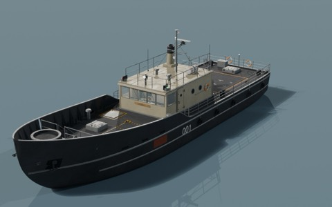
ScrapperLevel 0 · S-01Final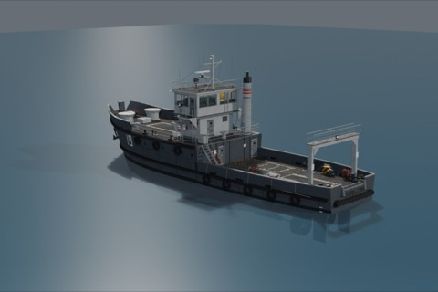
Recovery WorkboatLevel 1 · S-19Final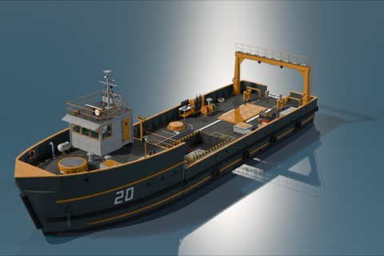
Salvage launchLevel 1 · S-20Final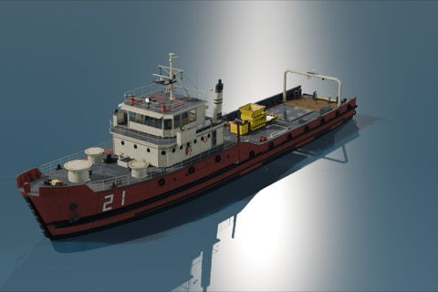
Salvage tenderLevel 2 · S-21Final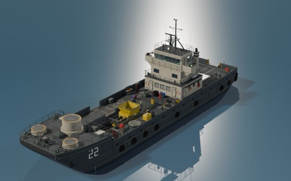
Barge-HoundLevel 2 · S-22Final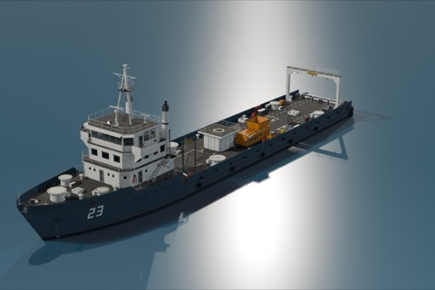
AtlasLevel 3 · S-23Final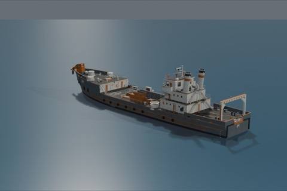
Salvage dredgerLevel 3 · S-24Final
Smuggler
Only Smugglers smuggle: a hidden hold under honest cargo.
Hunter
Warships and fast armed boats: bounties, escorts and fights.
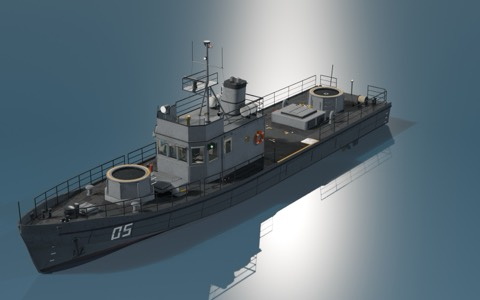
Scout skiffLevel 1 · S-05Final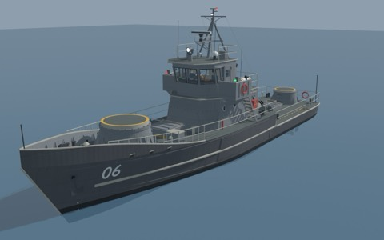
DartLevel 1 · S-06Final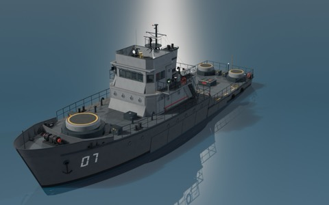
GunrunnerLevel 1 · S-07Final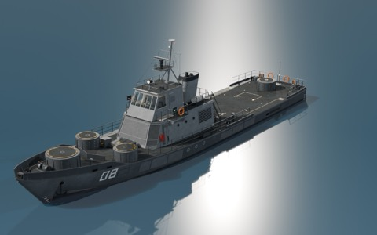
SkipjackLevel 2 · S-08Final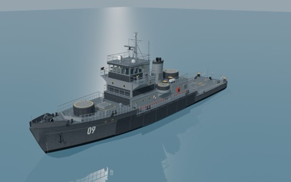
Armoured runnerLevel 2 · S-09Final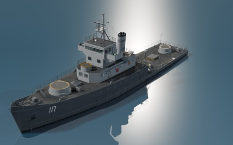
Patrol EscortLevel 2 · S-10Final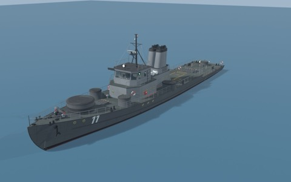
Blockade RunnerLevel 3 · S-11Final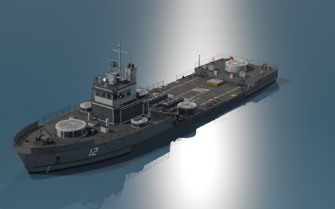
Rocket bargeLevel 3 · S-12Final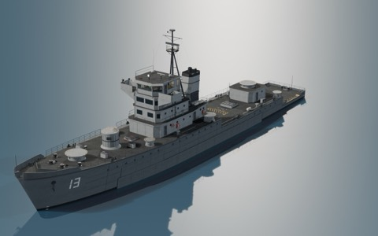
CorvetteLevel 3 · S-13Final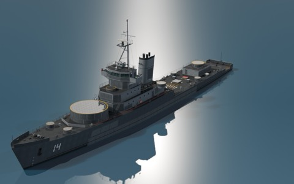
DestroyerLevel 4 · S-14Final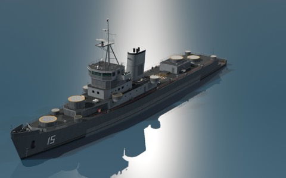
FrigateLevel 4 · S-15Final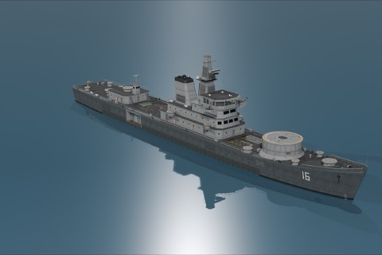
Missile cruiserLevel 5 · S-16Final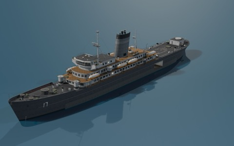
Armed linerLevel 5 · S-17Final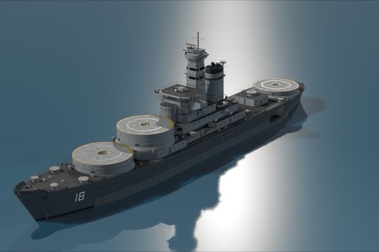
BattleshipLevel 5 · S-18Final
Hauler
Container ships, delivery boats and tankers: the ships that carry the world's cargo.
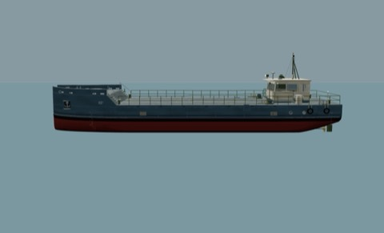
MuleLevel 1 · S-25Final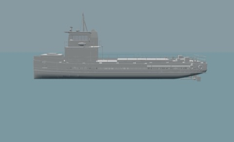
Supply runnerLevel 1 · S-26Final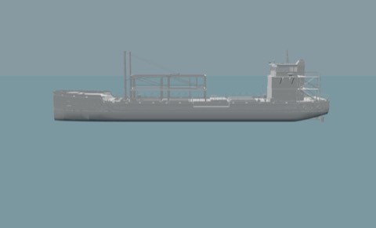
WorkhorseLevel 2 · S-27Final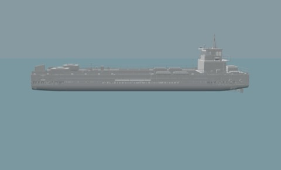
Landing craftLevel 2 · S-28Final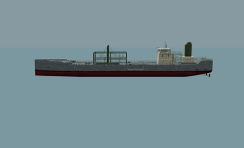
FreighterLevel 3 · S-29Final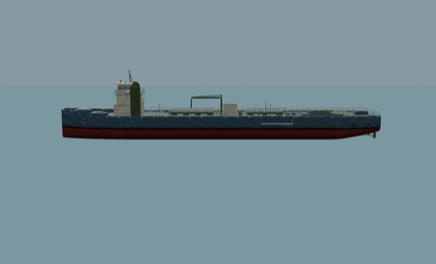
Refitted tankerLevel 3 · S-30Final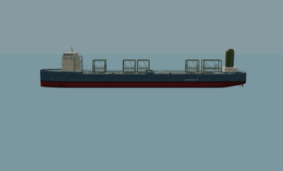
LeviathanLevel 4 · S-31Final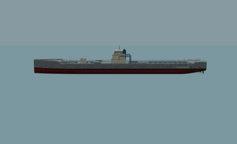
Fleet tankerLevel 4 · S-32Final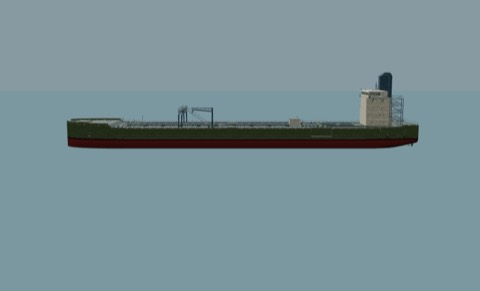
Crude tankerLevel 5 · S-33Final
Fishing
Only Fishing ships fish. The gear grows with the boat.